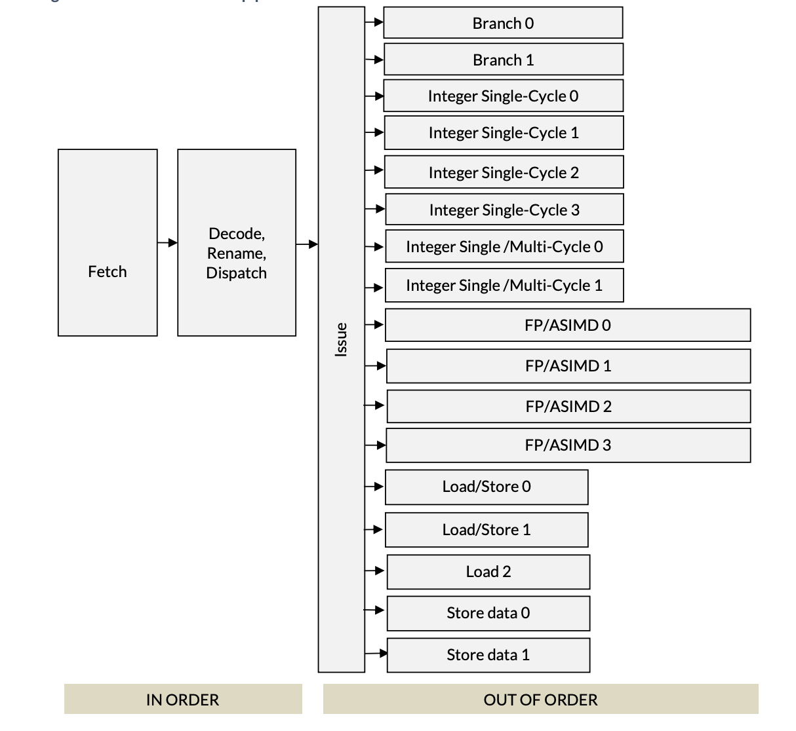

Your CPU Has More Registers Than You'd Think
Let’s start with a question: How many registers does your CPU have?
If you’re on a typical AArch64 machine, you’d start by listing the general purpose registers (x0-x31), the SIMD registers (Q0-Q31), zero register (xzr), the stack pointer (SP), program counter (PC) just to name a few. That adds to a total of 66 registers. However, if we were to zoom-in on a die shot for a CPU, we won’t be finding x0, x1 or any of the other registers. Instead, we’ll discover a large register file with hundreds of registers. These are often called “physical registers” and are differentiated from “architectural registers” (x0, x1 …).
This blog post is an inspection of this circuitry from an algorithmic point of view and the compiler optimizations it enables.
Out-Of-Order Execution
Modern, high-performance CPUs execute instructions in out-of-order fashion to exploit instruction-level parallelism. As a result, execution pipelines tend to be multi-ported to support parallel execution, deep and complex.
For example, here’s the execution pipeline of the ARM Neoverse V2 Microarchitecture (PDF):

First two stages of the pipeline are in-order, meaning the fetch unit fetches instructions from DRAM in program order and the decode unit goes through these instructions also in order. The decode unit is where all the interesting stuff happens and it’s the subject of this post. Post the decode unit, execution happens out of order by the parallel execution units.
Neoverse, pictured above, has 17 different execution units that all operate in parallel. As should be obvious from the names, branch units handle branch instructions, integer units; divided for single/multi cycle operations handle instructions like add, div and mul.
Decode
We start with the decode unit. The decoder figures out how many different
resources (for example, a slot in the Re-Order Buffer) an instruction may need,
which execution unit it belongs to and splits an instruction into many
micro-ops. For example, the
STP instruction of AArch64 is split into two micro-ops: store-address and
store-data. Micro-architectures are generally described with an “x-wide”
classification. For example, the Neoverse V2 is 4-wide and Apple M1 is 8-wide.
The decoder unit is where wideness comes from. 4-wide implies the decoder is
capable of dispatching 4 micro-ops per cycle.
Rename
Following the decoder is the rename/map unit. The rename unit maps/allocates a physical register for every architectural register. It is responsible for removing false dependencies from a set of instructions so that they can be executed out-of-order. Consider this snippet of AArch64 assembly:
1 add x3, x2, x1
2 sub x4, x3, x1
3 add x3, x5, x1
4 mul x6, x8, x7
Instruction 2 is clearly dependent on instruction 1’s results (written in register x3) and instruction 4 depends on instruction 3. At a first glance, it may appear that I3 depends on I1, but this is a case of Write-After-Write (WAW) and is commonly called a “false dependency” as I3 makes no use of the value written by I1. This would not be a problem if I3 used a register other than x3.
We can change our code or let the CPU do this automatically. The registers used in the snippet are “Architectural registers”. In a sense, architectural registers are hypothetical. If we were to zoom in on the die-shot of a CPU, we will not find any registers explicitly named x3. Instead, we find a large register file, with hundreds of registers. These are the “Physical” or real registers. Let’s call them P1, P2 and so on.
The renamer maps registers x1, x2 … to physical registers P1, P2… It also keeps track of when an instruction retires so that the physical register assigned to it can be reclaimed.
The hardware that stores the mappings is called the Register Alias Table (RAT). Roughly speaking, it’s a simple key-value map where the key is an architectural register and the value is a pointer to the physical register in the Physical Register File (PRF).
For the instructions above, this is how the instructions would be renamed as they come out of the decoder.
| Step | Arch Instruction | Source Lookups | Dest Map | Physical Instr | Relevant RAT |
| 0 | (Initial State) | - | - | - | x1:P1, x2:P2 |
| 1 | add x3 x2 x1 | x2:P2, x1:P1 | x3=P10 | add P10, P2, P1 | x3:P10 |
| 2 | sub x4 x3 x1 | x3:P10, x1:P1 | x4=P11 | sub P11, P10, P1 | x4:P11 |
| 3 | add x3 x5 x1 | x5:P5, x1:P1 | x3=P12 | add P12, P5, P1 | x3:P12 |
| 4 | mul x6 x8 x7 | x8:P8, x7:P7 | x6=P13 | mul P13, P8, P7 | x6:P13 |
Initially, I1 will cause x2 and x1 to be mapped to P1, P2 and x3 (which is a destination register) will be mapped to P10. I2, which is clearly dependent on I1 (via x3) will correctly recognize the dependency through P10. I3, which had a false dependency (Write-After-Write) on x3 will be rectified as its destination register will be renamed to P12. Finally, I4, which was independent of the other three instructions will have a new physical register assigned to it.
The converted instructions can be seen in the ‘Physical Inst’ column of the table above. Looking at the new instructions, it’s evident that there are no false dependencies present in the instructions now.
Optimizations Enabled By The Renamer
In the previous section, we saw how renaming enabled the CPU to schedule instructions out-of-order. As OoO execution enables ILP which directly affects the throughput, this is the single biggest optimization made possible by the Renamer.
The renamer provides a very important optimization in the form of 0-cycle or issue-less instructions. Consider the following snippet:
orr x1, xzr, x2
this is x1 = 0 | x2 which is essentially an assignment of x2 to x1. Since x1
and x2 are mapped to some physical registers, this instruction can be taken care
of during the rename stage by assigning x2’s physical register to x1. This makes
it an issue-less instruction or a zero cycle instruction. We can verify this with
llvm-mca:
$ echo "orr x1, xzr, x2" | llvm-mca -mcpu=neoverse-v2
Resource pressure by instruction:
[0.0] [0.1] [1.0] [1.1] [2.0] [2.1] [2.2] [3] [4.0] [4.1] [5] [6] [7] [8] [9] [10] [11] [12] [13] [14] Instructions:
- - - - - - - - - - - - - - - - - - - - mov x1, x2
The table above shows that the instruction consumes zero resources from the execution units. It is handled entirely in the rename stage.
Here’s another snippet:
mov x1, #4
This is constant assignment. While some architectures can handle this at the rename stage, it is not always the case. On Neoverse V2, a constant assignment still requires an execution unit:
$ echo "mov x1, #4" | llvm-mca -mcpu=neoverse-v2
Resource pressure by instruction:
... [4.0] [4.1] [5] [6] [7] [8] [9] [10] [14] Instructions:
... - - 0.16 0.16 0.17 0.17 0.17 0.17 - mov x1, #4
Wait, why does it show 0.16 and 0.17? This is because the instruction can be
handled by any of the 6 integer units ([5] through [10]), and llvm-mca
shows the average pressure across them.
While a zero cycle instruction sounds exciting, it’s important to note that these do occupy space in the fetch and decode part of the pipeline. They are not really free. Where they do help is freeing up the execution pipeline so that compute isn’t hampered by register-clear/register-move type trivial instructions.
References
These are some of the documents that I used to understand register renaming and other related concepts: